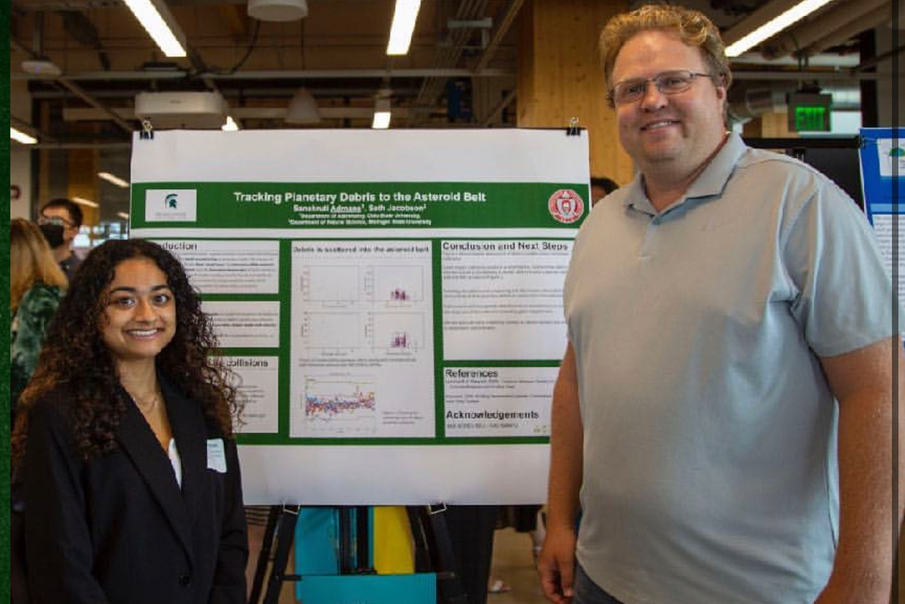

Lost Inner Solar System Material
Currently, I am working with Dr. Andre Izidoro at Rice University. We use Mo isotope data to determine the BSE composition of the Earth and the initial isotopic distributions required to recreate it. Initial results demonstrate a steep gradient required to reproduce our current assumed composition.
Presentation at NASA John Glenn Space Center
I was awarded a scholarship through the Ohio Space Grant Consortium for my work on Impact Ejecta Quantification during planet accretion. Here is a picture of me during the conference at which I presented my work.
Emplacement Efficiency of Impact Ejecta in the Asteroid Belt
During undergrad, I worked with Dr. Seth Jacobson at Michigan State University. This abstract is the culmination of our work:
The giant impact era includes the Moon-forming impact but the overall scope and severity of this phase across the terrestrial planets is unknown.
These violent collisions produce ejecta, some of which escapes onto heliocentric orbits.
Using astrophysical N-body simulations, we show that a remnant fraction of this debris likely survives from the giant impact era of planet formation to today.
The capture of impact ejecta onto long-term stable orbits in the main asteroid belt is enabled by gravitational interactions with Mars.
Even when considering very different terrestrial planet formation scenarios, considerable amounts of impact debris is stranded in the asteroid belt contradicting modern asteroid surveys.
Therefore, the giant impact era must either be severely limited or giant impact ejecta possesses a very steep size distribution.
This paper is in prep.

This is the first poster I presented about planet formation, with my advisor Seth, at a conference at Michigan State.
Estimating Strong Gravitational Lensing Parameters
In August 2023, I attended the Astromatic Hackathon at Ciela Institute in Montreal. This was a week-long program that began with crash courses on different types of machine learning and their implementation. We used a Bayesian Neural Network (BNN) to estimate the parameters of strong gravitational lensing. We then utilized MCMC methods to present the errors of our models, and show how to improve our algorithms. The presentation explained background, methodology, and demonstrated advanced error analysis. Finally, we suggested improvements on our model for future work.
Our detailed error analysis won over the judges, and led to our group winning the Hackathon. While training a neural network in 36 hours is admirable, it is more impressive to be able to explain the issues with the model, the possible improvements, and the theory behind the work.